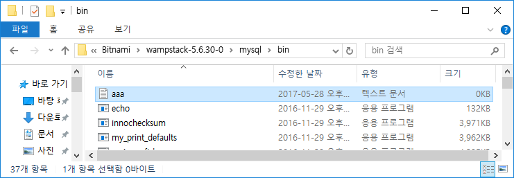
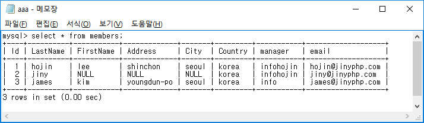

Mysql 콘솔은 모든 명령들이 텍스트의 SQL 명령과 출력을 합니다. 명령 실행의 결과를 콘솔 화면에서도 확인이 가능하겠지만 결과값을 별도로 저장을 하고 싶은 경우도 발생할 것입니다.
MySQL 실행된 출력 화면 결과를 별도의 독립된 파일로 저장을 할 수 있습니다. 이때 명 령을 실행하기 전에 화면 출력할 파일명을 지정하면 됩니다.
tee 명령은 mysql의 콘솔에서 작업하는 출력 화면 결과를 지정한 파일로 똑같이 복사하 여 출력을 지정합니다.
|SQL|
tee 파일명
|콘솔|
mysql> tee aaa.txt;
Logging to file 'aaa.txt'
mysql> select * from members;
+----+----------+-----------+-------------+-------+---------+-----------+-------------------+
| Id | LastName | FirstName | Address | City | Country | manager | email |
+----+----------+-----------+-------------+-------+---------+-----------+-------------------+
| 1 | hojin | lee | shinchon | seoul | korea | infohojin | hojin@jinyphp.com |
| 2 | jiny | NULL | NULL | NULL | korea | infohojin | jiny@jinyphp.com |
| 3 | james | kim | youngdun-po | seoul | korea | info | james@jinyphp.com |
+----+----------+-----------+-------------+-------+---------+-----------+-------------------+
3 rows in set (0.00 sec)
콘솔창에서 tee aaa.txt로 설정 후에 다른 SQL 명령을 실행하면 출력 화면과 동시에 aaa.txt 파일이 생성됩니다.

탐색기를 실행하여 해당 mysql이 설치된 파일 목록을 확인합니다. 생성된 파일을 확인할 수 있으며 메모장 등을 통하여 한 번 읽어 보면 다음과 같습니다.

한번 설정된 출력은 별도의 해제 명령이 입력될 때까지 계속 활성화되어 있습니다. 따라 서 화면 출력 기능을 비활성화하기 위해서는 별도의 해제 명령을 입력해야 합니다. 콘솔 화면 출력을 중지할 때는 notee 명령을 입력합니다.
| 쿼리 문법 |
notee;
| 콘솔 실습 화면 |
mysql> notee;
Outfile disabled.
이제 더 이상 쿼리 출력 결과가 파일로 저장되지 않습니다.
이처럼 화면 저장 기능은 특정한 데이터의 자료를 저장할 때 매우 유용합니다.